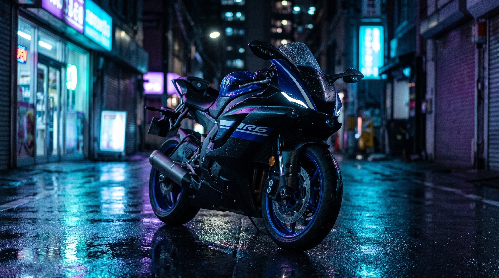
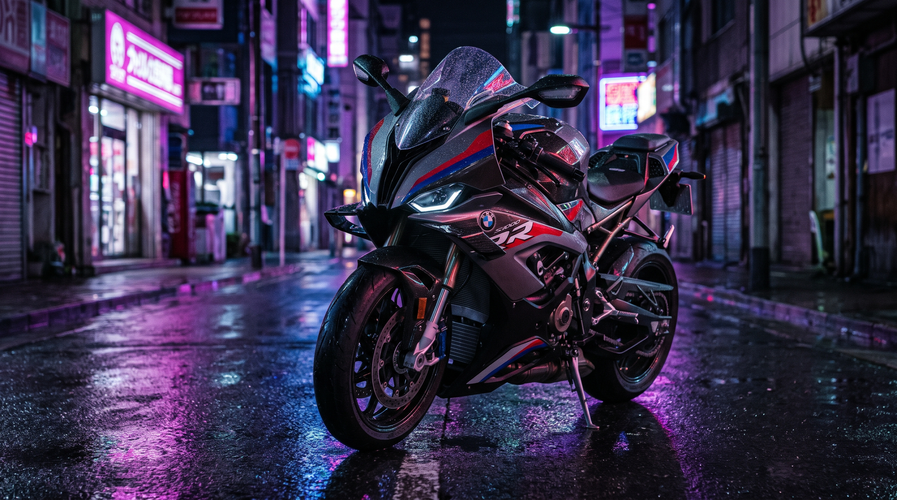
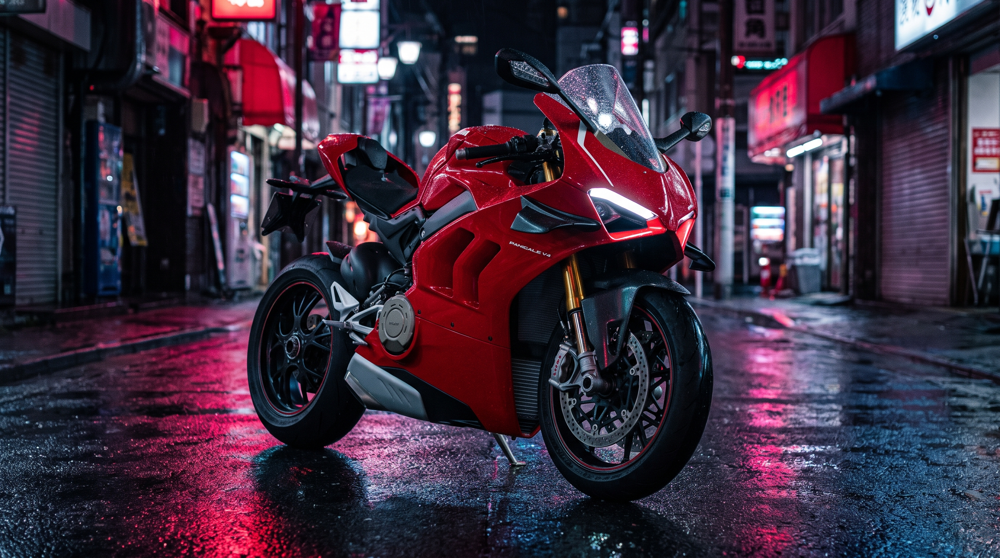
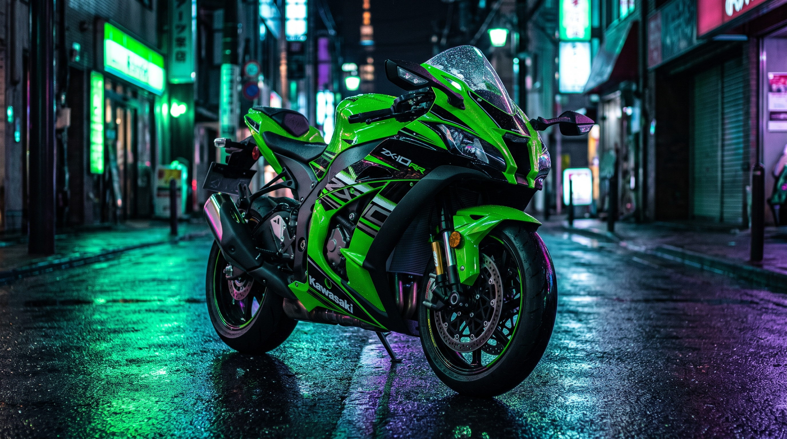
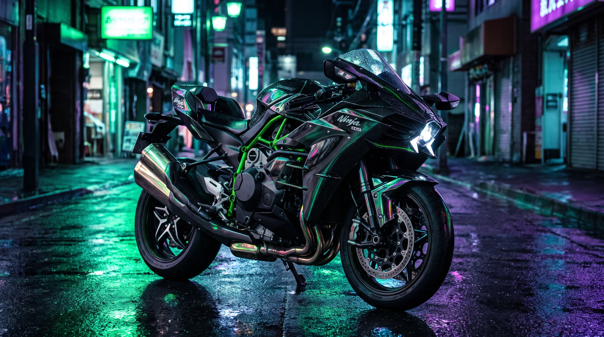

Motosiklet Tutkusu & Efsane Makineler
İki teker üzerindeki hız, güç ve özgürlük hissi benim için bir yaşam tarzı. Dünyanın en ikonik ve performans odaklı supersport makineleri:

1. Yamaha YZF-R6
Agresif tasarımı, yüksek devir çeviren motor karakteristiği ve pist DNA'sı ile supersport sınıfının en ikonik ve ruh sahibi makinelerinden biridir.
- Motor Tipi: 599cc, Sıvı soğutmalı, 4 zamanlı, DOHC, sıralı 4 silindir
- Güç & Tork: 118.4 HP @ 14.500 rpm | 61.7 Nm @ 10.500 rpm
- Maksimum Hız: ~260+ km/s (Pist odaklı kısa şanzıman oranları)
- Islak Ağırlık: 190 kg (Hafif alüminyum Deltabox şasi)
- Elektronik Donanım: 6 kademeli Çekiş Kontrolü (TCS), Quickshifter (QSS), YCC-T elektronik gaz
- Karakteristik: 16.000+ devir çeviren çığlık atan egzoz sesi ve jilet gibi keskin viraj kabiliyeti

2. BMW S1000RR
Alman mühendisliğinin zirvesi olan S1000RR; elektronik donanımları, ShiftCam teknolojisi ve asfaltı ağlatan gücüyle mutlak bir hız makinesidir.
- Motor Tipi: 999cc, Sıvı/yağ soğutmalı 4 silindir, BMW ShiftCam teknolojisi
- Güç & Tork: 210 HP @ 13.750 rpm | 113 Nm @ 11.000 rpm
- Maksimum Hız: 300+ km/s (Elektronik sınırlandırılmış 299 km/s)
- Islak Ağırlık: 197 kg (M Paketi ile 193.5 kg)
- Elektronik Donanım: 6 eksenli IMU, Dinamik Çekiş Kontrolü (DTC), Slide Control ve M Winglet kanatlar
- Karakteristik: Üstün Alman mühendisliği, kusursuz elektronik yardımcılar ve patlayıcı ivmelenme

3. Ducati Panigale V4
İtalyan tutkusunun, MotoGP teknolojisinin ve muazzam bir tasarım sanatının yollardaki en net karşılığıdır. Desmosedici Stradale V4 motorunun sesi büyüleyicidir.
- Motor Tipi: 1103cc, Desmosedici Stradale 90° V4 (MotoGP türevli)
- Güç & Tork: 215.5 HP @ 13.000 rpm | 123.6 Nm @ 9.500 rpm
- Maksimum Hız: 300+ km/s
- Islak Ağırlık: 198.5 kg
- Elektronik Donanım: Çift katmanlı aerodinamik kanatçıklar, Ducati Slide Control, Brembo Stylema frenler
- Karakteristik: Saf İtalyan tasarım sanatı, Desmodromic valf sistemi ve eşsiz V4 egzoz senfonisi

4. Kawasaki Ninja ZX-10RR
WorldSBK pistlerinin efsanevi şampiyonu. Limitleri zorlamak ve pist yarış genetiğini doğrudan sokağa taşımak için üretilmiş agresif bir canavardır.
- Motor Tipi: 998cc, Sıvı soğutmalı sıralı 4 silindir (Pankl titanyum biyel kolları)
- Güç & Tork: 204 HP (Ram Air ile 214 HP) @ 14.000 rpm | 111.8 Nm @ 11.700 rpm
- Maksimum Hız: 299 km/s
- Islak Ağırlık: 207 kg (Marchesini dövme alüminyum yarış jantları)
- Elektronik Donanım: Entegre kanatçıklı grenaj, Showa BFF yarış süspansiyonları, Bosch IMU
- Karakteristik: WorldSBK şampiyonluklarından gelen saf yarış genetiği ve kusursuz pist dengesi

5. Kawasaki Ninja H2
Motosiklet dünyasının kurallarını değiştiren, süperşarj (supercharger) beslemeli motoruyla gezegendeki en sıra dışı ve korkutucu hız makinelerinden biridir.
- Motor Tipi: 998cc, Süperşarjlı (Supercharged), sıvı soğutmalı sıralı 4 silindir
- Güç & Tork: 231 HP (Ram Air ile 243 HP) @ 11.500 rpm | 141.7 Nm @ 11.000 rpm
- Maksimum Hız: 330+ km/s (Pist versiyonu H2R ile 400 km/s)
- Islak Ağırlık: 238 kg (Yüksek hızlı çelik kafes Trellis şasi)
- Elektronik Donanım: Kawasaki Havacılık Bölümü tasarımı santrifüj süperşarj ve kendini onaran ayna boya
- Karakteristik: Gazı kesince duyulan ikonik süperşarj "çuf" sesi ve akıl almaz ivmelenme